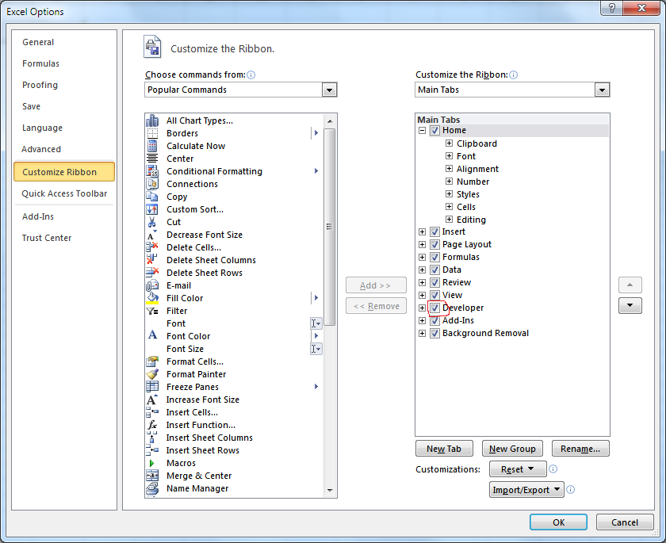
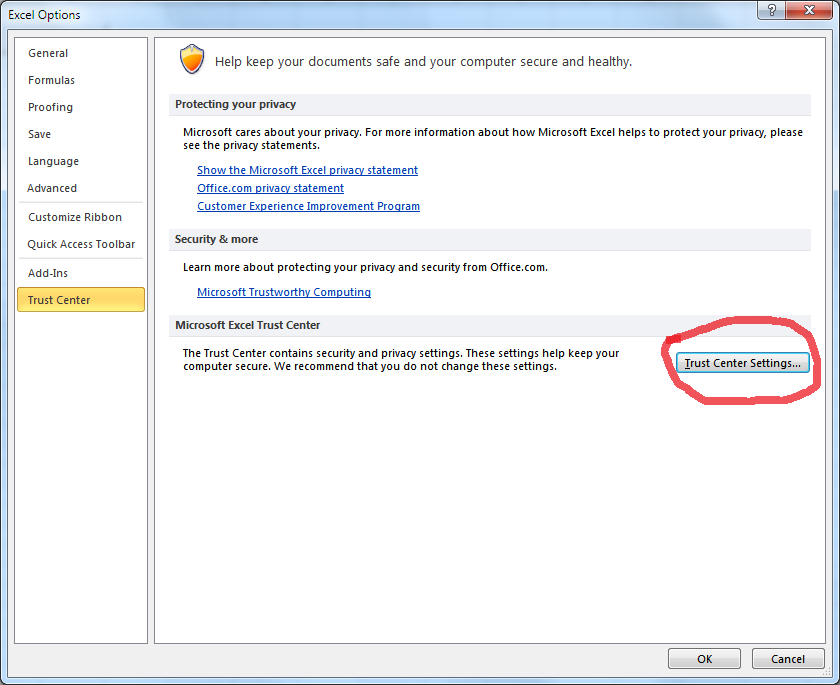
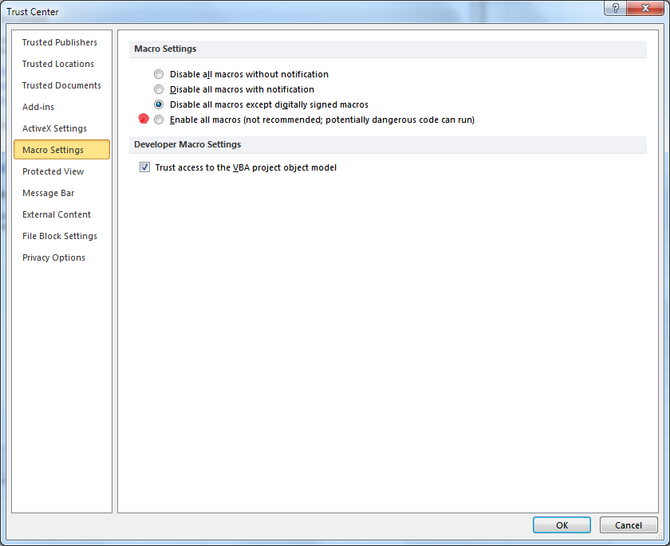
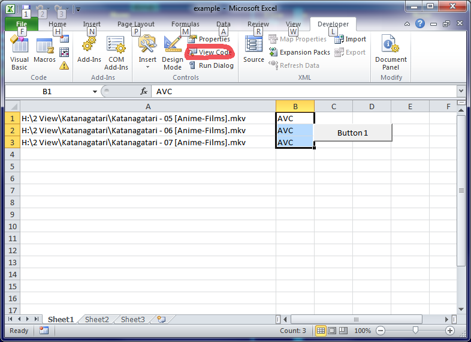
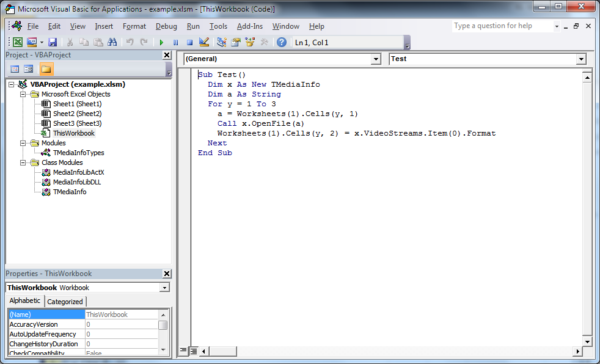

- Put MediaInfo.dll (CPU architecture must be same as you VBA engine build, e.g. MediaInfo.dll 64-bit with a 64-bit Excel) in a path visible by the application (e.g. C:\Windows)
- You have to enable Developers Tab

- Enable Macroses


There you can enable macroses, but My recommendation as Microsoft recommendation – not use this mode permanently, only for test purpose only
- After that, you can open this file, and macros have to work.
- If you want to view/edit code, you have to open code editor

- It should looks like this:
